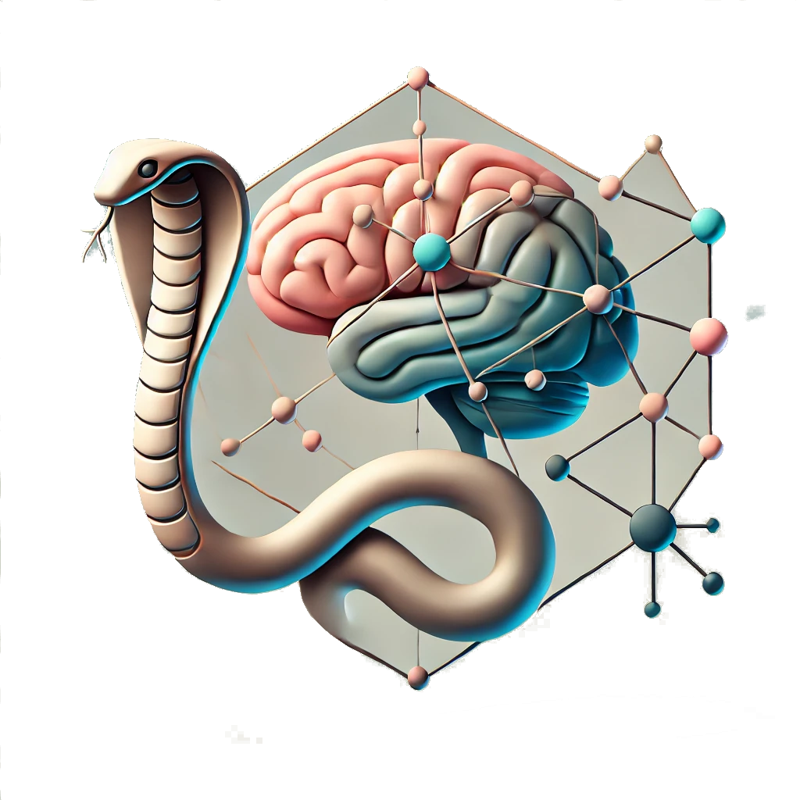

CCS*2025 Satellite Complexity in the Brain (CoBrain)

3 and 4 september 2025
Siena, Italy
CNS*2024
|
Aims and topics
Registration and Access
The workshop will be held as a part of the CCS*2025 in Siena, Italy Please see the CCS 2025 website for registration to the satellites (this is required to attend).
Organising committee
Speakers
The following are invited and contributing speakers for the Satellite
Call for contributed talks
Now Closed!
Program
|
Chair: Jane doe |
| 14:00 - 14:45 |
jane doe
University of Valparaiso
"yba"
|
Abstracts
jane doe - "T"